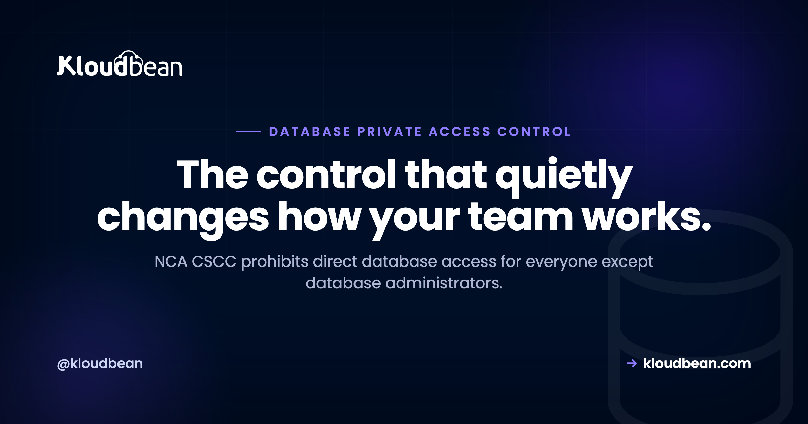

No Direct Database Access: Architecting for CSCC 2-2-1-8

One short CSCC control has more effect on daily engineering habits than almost any other. Control 2-2-1-8 prohibits direct access and interaction with databases for all users except database administrators, and says users must reach data through applications only. Read plainly, that means the developer who opens a GUI client against production, the analyst running ad-hoc queries, and the support engineer checking a record all lose that path. This explains what the control asks for, how to build it, and what to give people instead.
Direct access and interaction with databases is prohibited for all users except database administrators. Everyone else must access and interact with data through applications only. The control also asks you to give consideration to security solutions that limit or prohibit visibility of classified data to database administrators. In practice that means databases on private networking with no public endpoint, application-layer access paths, a narrow and audited DBA exception, and controls on what administrators can see.
What the control actually says
Three distinct requirements sit inside one control, and it helps to separate them:
- No direct database access or interaction for all users, with database administrators as the only exception.
- Users reach data through applications only. The application becomes the mandatory access path, not a convenience.
- Consideration of solutions that limit or prohibit visibility of classified data to database administrators. This one is phrased as consideration rather than an absolute, but it is pointing at the obvious residual risk: if DBAs are the exception, what stops a DBA reading everything?
Note the word "interaction" alongside "access". A read-only connection is still direct interaction. The control is not only about write protection.
Why the control exists
Two reasons worth understanding, because they shape how you implement it rather than work around it.
First, accountability. When a user queries the database directly, the record of what happened lives in database logs as a connection and a statement, with no business context. When the same user acts through an application, you get an authenticated identity, an authorisation decision, an action with meaning, and an audit trail that ties to a person and a purpose. That is what makes an investigation possible later.
Second, the blast radius of a credential. A database credential that works from anywhere is one leaked environment file away from full data access. Removing the direct path means a leaked connection string is far less useful on its own, because there is no route from the internet to the port it names.
The architecture
The shape that satisfies this is well established, and it maps onto CSCC's other network requirements neatly.
Private networking only. The database has no public endpoint. It sits on a private address inside your virtual network, reachable from the application tier and nothing else. This also serves 2-4-1-1, which requires critical system networks to be segregated and isolated.
Application tier as the access path. The application connects over the private network. Users authenticate to the application, the application authorises the action, and the application queries the database. Combined with the minimum three-tier requirement in 2-12-2 and 2-13-3-1, this is the same architecture read from a different angle.
A narrow administrative path. DBAs are the permitted exception, but that access should still be constrained: through VPN and a bastion host rather than from the open internet, with multi-factor authentication under 2-2-1-3, from workstations on the isolated management network described in 2-3-1-4, and with the session logged.
Service accounts handled properly. The application's own database credential is a service account. Control 2-2-1-7 asks for service accounts to be managed securely with interactive login disabled, so that credential should not double as something a human can log in with.
What this breaks, and what to offer instead
Be honest with your team about the friction, because unacknowledged friction turns into shadow workarounds that undo the control.
| Habit that stops working | What to provide instead |
|---|---|
| Developer connects a GUI client to production | Read access through an internal admin view in the application, scoped by role |
| Analyst runs ad-hoc SQL against production | A reporting path fed from a separate, masked dataset |
| Support engineer looks up a customer record | A support screen in the application, with the lookup logged against their identity |
| Engineer takes a production dump to debug locally | Masked or scrambled data, since 2-6-1-1 and 2-6-1-5 prohibit the casual copy |
| Batch job connects from a developer machine | A scheduled job running inside the application tier |
The pattern is the same each time: the need is legitimate, and the answer is to build the path into the application where it can be authenticated, authorised, and logged, rather than leaving a direct connection open because it is convenient.
The uncomfortable part: limiting DBA visibility
The final clause is the one most implementations skip, and it deserves a straight treatment. If DBAs are the permitted exception, they can technically read everything, including data classified under 2-6-1-2. The control asks you to give consideration to solutions that limit or prohibit that visibility.
Options that genuinely help, roughly in order of strength: encrypting sensitive fields at the application layer so the database holds ciphertext a DBA cannot interpret, which 2-7-1-2 supports by allowing encryption at column level; tokenising the most sensitive values so the database stores references rather than content; masking at the query layer for administrative sessions; and separating duties so the person who administers the database is not the person who holds the application's encryption keys.
Being clear about the limit: no infrastructure configuration achieves this on its own. Application-layer field encryption and tokenisation are code decisions made by your development team. Infrastructure can enforce least privilege, log every administrative session, and keep the keys somewhere the DBA cannot reach, and the rest is application work. Anyone claiming a hosting product removes DBA visibility by itself is overstating what infrastructure can do.
How to evidence it
For a review, have these ready: the network configuration showing the database has no public endpoint, the connectivity path proving only the application tier can reach it, the user and role list with the DBA exception explicitly identified, the VPN and bastion configuration for the administrative path, MFA coverage for those accounts, and administrative session logs. If someone asks whether a developer can reach production data directly, you want to answer with configuration rather than policy.

Where Kloudbean fits
On managed enterprise engagements, Kloudbean runs managed databases on private addressing with no public endpoint, reachable from the application tier over private networking, with administrative access routed through VPN and a dedicated bastion host under multi-factor authentication, least-privilege roles, and session logging. That covers the infrastructure half of 2-2-1-8. The application-layer pieces, an internal admin view, a masked reporting path, and any field-level encryption or tokenisation, are built by your development team, and we will happily design the split with you.
Related reading
For the framework see NCA CSCC explained, and for the full gap list the critical systems hosting checklist. On the technical neighbours: what is a VPC, database connection pooling, and managed PostgreSQL hosting. Logging and retention are in CSCC 18-month log retention, and residency in data residency in Saudi Arabia.
Databases people cannot reach directly.
Kloudbean runs managed enterprise engagements with databases on private addressing and no public endpoint, application-tier-only access, and administrative paths behind VPN, bastion, and MFA with session logging, on in-Kingdom infrastructure where required. Start a conversation at kloudbean.com.
Private-only databases · No public endpoint · VPN and bastion admin path · MFA · Session logging
FAQ
What does CSCC 2-2-1-8 require?
It prohibits direct access and interaction with databases for all users except database administrators, and requires other users to access and interact with data through applications only. It also asks for consideration of solutions that limit or prohibit visibility of classified data to database administrators.
Can developers connect to a production database under CSCC?
Not directly, unless they are the designated database administrators. The control names DBAs as the only exception. Legitimate developer needs should be served through the application, for example a role-scoped internal admin view, or through a separate masked dataset for investigation and reporting.
How do I stop direct database access technically?
Give the database private addressing with no public endpoint, so it is reachable only from the application tier inside your private network. Route the administrative exception through VPN and a bastion host with multi-factor authentication and session logging. Then the absence of a public route is the control, rather than a policy asking people not to connect.
Does this control mean database administrators can see everything?
That is the residual risk the control's final clause points at, which is why it asks for consideration of solutions limiting administrator visibility of classified data. The strongest answers are application-layer field encryption or tokenisation, so the database holds ciphertext or references, plus separating duties so the DBA does not hold the application's keys. Those are code and key-management decisions, not infrastructure settings.
How do analysts run reports if they cannot query the database?
Through a reporting path fed from a separate dataset rather than production. Keep in mind that 2-6-1-1 prohibits using critical systems data in other environments without masking or scrambling, and 2-6-1-5 prohibits transferring production data out, so the reporting dataset needs to be masked rather than a straight copy.
Does a private database endpoint satisfy 2-2-1-8 on its own?
It satisfies the infrastructure half, which is the part that removes the direct path. The rest is application work: building the access paths users legitimately need so they do not go looking for workarounds, and deciding how to limit administrator visibility of classified data. Infrastructure and application both have to move for the control to hold.